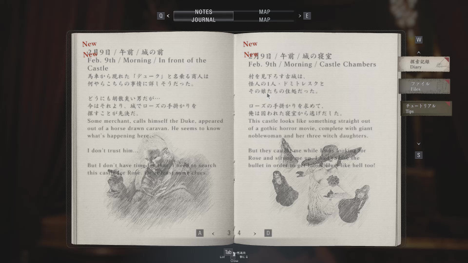

トップ>MOD工房>バイオ8MOD作成に関する情報
MODの導入方法については解説サイトが多数存在するのですが、MODの作成に関して日本語で説明しているサイトがなかったので、自分でまとめることにしました。
このページでは、バイオ8のMOD作成に関して僕が知る情報をMODの種類ごとに記載します。
なお、このページはMOD製作に必要な情報を大まかにまとめたページであり、チュートリアルではありませんのでご了承ください。
また、MOD作成に詰まったときの情報の集め方を別ページにまとめてありますので、よろしければそちらもご覧ください。
どの種類のMODを作るにしても「これを知らないと話にならない」というレベルの必須事項ばかりです。
 Fllufy ManagerはMODの管理ツールです。
Fllufy ManagerはMODの管理ツールです。
日本のサイトでも紹介ページが多数存在するので、知っている方も多いと思います。
開発はバイオMOD界の大ボスであるFllufyQuack氏が行っています。
完成したMODはこのツールを使って適用します。
Fllufy Manager同様、FlluffyQuack氏が開発しています。
ただし、抽出後のファイルは独自フォーマットとなっており、blender、photoshop等で中身を閲覧することはできません。
↓REtoolの詳細はこちら
PAK/TEX editing tool
 Noesisは3Dモデル、テクスチャ、アニメーション等のファイルを閲覧、変換するためのツールです。
Noesisは3Dモデル、テクスチャ、アニメーション等のファイルを閲覧、変換するためのツールです。
バイオ用のプラグインが存在し、独自フォーマットのファイルをfbxやdds等に変換できます。
↓Noesisのダウンロードはこちら
Rich Whitehouse
↓バイオ用プラグインの詳細はこちら
Exporting custom models to RE2, RE3 and DMC5 with Noesis
ファイル名にはキャラ名等の情報が記載されていない場合もあるため、このファイルリストを確認することで目的のファイルが探しやすくなります。
ただし、全てのファイルを網羅しているわけではありません。
Fllufy Manager同様、FlluffyQuack氏が開発しています。
このツールは必須ではありませんが、編集したいリソースのパスを探すときに使えます。
↓Filepath Dumperのダウンロードはこちら
RE Engine Filepath Dumper - Resident Evil Village | FluffyQuack on Patreon
テクスチャMODとは、3Dモデルに使われるテクスチャ画像を変更するMODのことです(上記画像はskull198氏が作成した、ナイフのテクスチャMOD)。
画像を編集するだけの手軽なMODなので、 多くのMOD初心者が最初に手をつけるMODだと思います。
Texture Editing with Photoshop (Neck Seam)
なお、上記ページでは、テクスチャのフォーマットを変更する際にバイナリデータの編集を行っていますが、この工程は最新版のNoesisでサポートされているため、バイナリデータを編集する必要はありません。
通常のテクスチャファイルとはフォーマットが異なるため、各ファイルの役割を理解しておく必要があります。
各テクスチャファイルの役割は以下の通りです。
The individual texture maps and their meaning
モデルMODとは、ゲーム内で使われる3Dモデルを変更するMODのことです(上記画像は僕が作成した、鶏をアヒルに変えるMOD)。
「バイオハザードのMOD」と聞いてほとんどの人が思い浮かべるMODはこのモデルMODです。
Exporting custom models to RE2, RE3 and DMC5 with Noesis
この問題は掲示板内でも度々取り上げられるのですが、「blenderではボーンを編集できない」というのが結論のようです。
ハッキリした原因はわかりませんが、blenderでfbxを扱う際にboneIDが変わってしまうことが関係していると思われます。
ボーンの編集を行う場合はblenderではなく3ds maxを使いましょう。
専用プラグインを用いてメッシュファイルの編集ができます。
↓3ds max用プラグインの詳細はこちら。
RE-ENGINE MESH TOOL (Maxscript) v1.39 updated
バイオではBGMやSEを過去作のものに置き換えるオーディオMODが多いです。
オーディオMODは情報が少ないにも関わらず、専用ツールが複数存在しており、正直どのツールを使えばよいのか僕にもわかりません。
自分は「バイナリデータを弄らなくてよい」という理由でRingingBloomを使っています。
↓RingingBloomの詳細はこちら
Silvris/RingingBloom
↓オーディオMODのチュートリアルはこちら(RingingBloomではなくwwiseutilというツールを使ったチュートリアルですが、手順はだいたい同じです)
My method of audio modding
テキストMODは非公式の翻訳MODがたまに発表されるくらいで、ほとんど見かけることはありません。
txtファイルを書き換えるだけのMODなので、一番簡単に作れます。
↓REngine_Text-Toolの詳細はこちら
Resident Evil msg Tool - ZenHAX
REtoolで抽出したバイナリファイルを編集することで作成します。
例えば、出現する敵の種類を変更するMODのチュートリアルが以下のページにあります。
RE8 enemy swapping tutorial
自分はアニメーションMODに関与していないため詳細は分かりませんが、以下のページにチュートリアルがあります。
Motlist Tool (Maxscript) - Custom Animations in RE Engine
なお、アニメーションMODの作成には3ds maxが必要です。blenderは使えません。
バイオ8では、ゲーム体験の向上(視点変更、FOV変更等)に使われる場合が多いです。
「体力無限」等のいわゆるチートツールとしての使われ方はあまりされてないように思います。
僕はtrainerを作ったことがないので詳細はわかりませんが、作成方法はバイオ以外のゲームと同じだと思います。
↓こういうチュートリアルを参考にすれば作れるのではないでしょうか。
C++ HOW TO HACK any game TUTORIAL Pt 1 Intro - YouTube
MOD工房
バイオ8 MOD作成に関する情報まとめ
このページではバイオ8のMOD作成に関して僕が知る情報を記載します。
なお、ここで紹介する情報やツールの信頼性、安全性は保証できません。MODの作成は自己責任でお願いします。
はじめに
最近、バイオハザードヴィレッジ(以下バイオ8)のMODの作成にハマっており、MODの作成手順について調べています。MODの導入方法については解説サイトが多数存在するのですが、MODの作成に関して日本語で説明しているサイトがなかったので、自分でまとめることにしました。
このページでは、バイオ8のMOD作成に関して僕が知る情報をMODの種類ごとに記載します。
なお、このページはMOD製作に必要な情報を大まかにまとめたページであり、チュートリアルではありませんのでご了承ください。
また、MOD作成に詰まったときの情報の集め方を別ページにまとめてありますので、よろしければそちらもご覧ください。
1.MOD全般
はじめに、MOD全般に関わるツールや情報を紹介します。どの種類のMODを作るにしても「これを知らないと話にならない」というレベルの必須事項ばかりです。
1.1.Fllufy Manager
日本のサイトでも紹介ページが多数存在するので、知っている方も多いと思います。
開発はバイオMOD界の大ボスであるFllufyQuack氏が行っています。
完成したMODはこのツールを使って適用します。
1.2.REtool
REtoolは.pakファイルから3Dモデル等のリソースを抽出するためのツールです。Fllufy Manager同様、FlluffyQuack氏が開発しています。
ただし、抽出後のファイルは独自フォーマットとなっており、blender、photoshop等で中身を閲覧することはできません。
↓REtoolの詳細はこちら
PAK/TEX editing tool
1.3.Noesis
バイオ用のプラグインが存在し、独自フォーマットのファイルをfbxやdds等に変換できます。
↓Noesisのダウンロードはこちら
Rich Whitehouse
↓バイオ用プラグインの詳細はこちら
Exporting custom models to RE2, RE3 and DMC5 with Noesis
1.4.Ultimate File List
MOD掲示板のUltimate File Listというスレには各ファイルの内容が大まかに記されています。ファイル名にはキャラ名等の情報が記載されていない場合もあるため、このファイルリストを確認することで目的のファイルが探しやすくなります。
ただし、全てのファイルを網羅しているわけではありません。
1.5.Filepath Dumper
Filepath Dumperはゲームがアクセスしたリソースのパスを記録するためのツールです。Fllufy Manager同様、FlluffyQuack氏が開発しています。
このツールは必須ではありませんが、編集したいリソースのパスを探すときに使えます。
↓Filepath Dumperのダウンロードはこちら
RE Engine Filepath Dumper - Resident Evil Village | FluffyQuack on Patreon
2.テクスチャMOD
画像を編集するだけの手軽なMODなので、 多くのMOD初心者が最初に手をつけるMODだと思います。
2.1.ワークフロー
テクスチャMODの大まかな作成手順は以下の通りです。 ※()の中身は使用するツールです。- リソースファイルの抽出(REtool)
- テクスチャファイルのフォーマットを.tex.30から.dds, .tga等に変換(Noesis)
- テクスチャファイルを加工(Photoshop, GIMP等)
- テクスチャファイルのフォーマットを.tex.30に変換(Noesis)
- 完成したMODファイルを.rarに圧縮(WinRAR等)
- Fllufy Managerで適用
Texture Editing with Photoshop (Neck Seam)
なお、上記ページでは、テクスチャのフォーマットを変更する際にバイナリデータの編集を行っていますが、この工程は最新版のNoesisでサポートされているため、バイナリデータを編集する必要はありません。
2.2.各テクスチャファイルの役割
バイオ８には4種類のテクスチャファイルが存在します。通常のテクスチャファイルとはフォーマットが異なるため、各ファイルの役割を理解しておく必要があります。
各テクスチャファイルの役割は以下の通りです。
- albm: RGBがベースカラー、αチャンネルがメタリックを表す。
- nrmr: RGBがノーマルマップ、αチャンネルがラフネスを表す。
- atoc: Rが透明度、Gが半透明度(曇りガラスみたいな感じ)を表す。Bとαに関してはよくわかっていないが、おそらくオクルージョンを表している。
- mskm: GPUの物理演算が適用されるようなモデル(衣服等)に関連しているようだが、詳しいことはわからない。
The individual texture maps and their meaning
3.モデルMOD
「バイオハザードのMOD」と聞いてほとんどの人が思い浮かべるMODはこのモデルMODです。
3.1.ワークフロー
モデルMODの大まかな作成手順は以下の通りです。- リソースファイルの抽出(REtool)
- メッシュファイルを.mesh.2101050001から.fbxに変換(Noesis)
- fbxを加工(blender)
- fbxを.mesh.2101050001に変換(Noesis)
- 完成したMODファイルを.rarに圧縮(WinRAR等)
- Fllufy Managerで適用
Exporting custom models to RE2, RE3 and DMC5 with Noesis
3.2.blenderではボーンの編集ができない
ワークフローに「fbxを加工(blender)」と書きましたが、blenderでボーンの編集を行ってもうまくゲームに反映されません。この問題は掲示板内でも度々取り上げられるのですが、「blenderではボーンを編集できない」というのが結論のようです。
ハッキリした原因はわかりませんが、blenderでfbxを扱う際にboneIDが変わってしまうことが関係していると思われます。
ボーンの編集を行う場合はblenderではなく3ds maxを使いましょう。
専用プラグインを用いてメッシュファイルの編集ができます。
↓3ds max用プラグインの詳細はこちら。
RE-ENGINE MESH TOOL (Maxscript) v1.39 updated
4.オーディオMOD
オーディオMODとは、ゲーム内の音(BGM、SE、ボイス等)を置き換えるMODのことです。バイオではBGMやSEを過去作のものに置き換えるオーディオMODが多いです。
4.1.ワークフロー
オーディオMODの大まかな作成手順は以下の通りです。- リソースファイルの抽出(REtool)
- オーディオファイル(.bnk or .pck)から.wemを抽出(RingingBloom)
- wemをoggに変換(ww2ogg)
- oggを加工し、wav形式で出力(Audacity等)
- wavからwemを作成(Wwise)
- オーディオファイル(.bnk or .pck)のwemを置き換え(RingingBloom)
- 完成したMODファイルを.rarに圧縮(WinRAR等)
- Fllufy Managerで適用
オーディオMODは情報が少ないにも関わらず、専用ツールが複数存在しており、正直どのツールを使えばよいのか僕にもわかりません。
自分は「バイナリデータを弄らなくてよい」という理由でRingingBloomを使っています。
↓RingingBloomの詳細はこちら
Silvris/RingingBloom
↓オーディオMODのチュートリアルはこちら(RingingBloomではなくwwiseutilというツールを使ったチュートリアルですが、手順はだいたい同じです)
My method of audio modding
5.テキストMOD

テキストMODとは、ゲーム内のテキストデータ(字幕、UIの文字等)を書き換えるMODのことです(上記画像は僕が作成した2言語表示MOD)。テキストMODは非公式の翻訳MODがたまに発表されるくらいで、ほとんど見かけることはありません。
txtファイルを書き換えるだけのMODなので、一番簡単に作れます。
5.1.ワークフロー
テキストMODの大まかな作成手順は以下の通りです。- リソースファイルの抽出(REtool)
- テキストファイル(.msg)を.txtに変換(REngine_Text-Tool)
- txtを編集(テキストエディタ)
- .txtを.msgに変換(REngine_Text-Tool)
- 完成したMODファイルを.rarに圧縮(WinRAR等)
- Fllufy Managerで適用
↓REngine_Text-Toolの詳細はこちら
Resident Evil msg Tool - ZenHAX
6.データベースMOD
データベースMODはゲーム内のデータベース(出現する敵のID、商品価格等)を変更するMODです。REtoolで抽出したバイナリファイルを編集することで作成します。
例えば、出現する敵の種類を変更するMODのチュートリアルが以下のページにあります。
RE8 enemy swapping tutorial
7.アニメーションMOD
アニメーションMODとはキャラクターのアニメーションを変更するMODのことです。自分はアニメーションMODに関与していないため詳細は分かりませんが、以下のページにチュートリアルがあります。
Motlist Tool (Maxscript) - Custom Animations in RE Engine
なお、アニメーションMODの作成には3ds maxが必要です。blenderは使えません。
8.trainer
trainerとは、動作中のゲームにリアルタイムで干渉してメモリの書き換え等を行うチートツールのことです。バイオ8では、ゲーム体験の向上(視点変更、FOV変更等)に使われる場合が多いです。
「体力無限」等のいわゆるチートツールとしての使われ方はあまりされてないように思います。
僕はtrainerを作ったことがないので詳細はわかりませんが、作成方法はバイオ以外のゲームと同じだと思います。
↓こういうチュートリアルを参考にすれば作れるのではないでしょうか。
C++ HOW TO HACK any game TUTORIAL Pt 1 Intro - YouTube